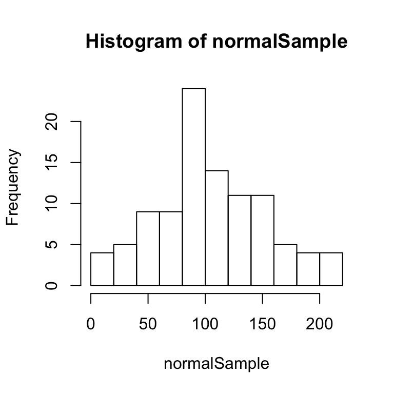
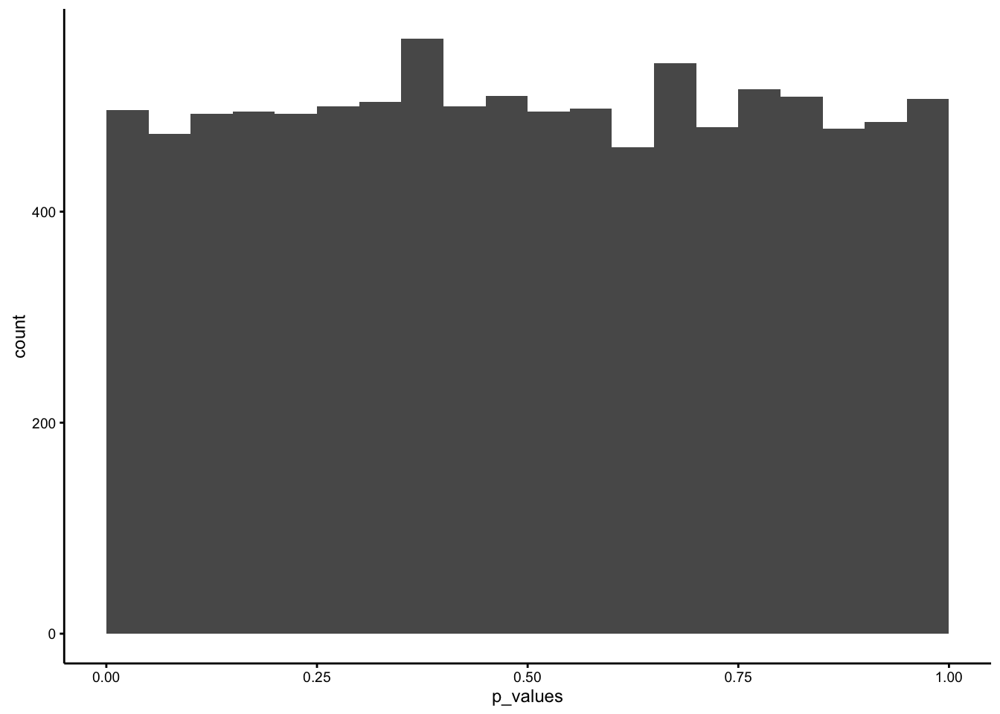
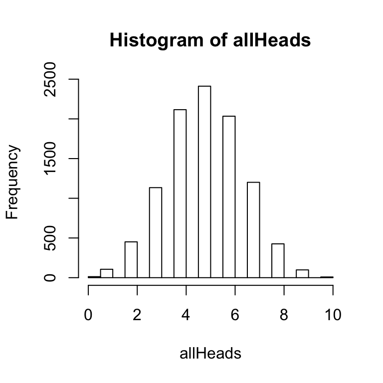
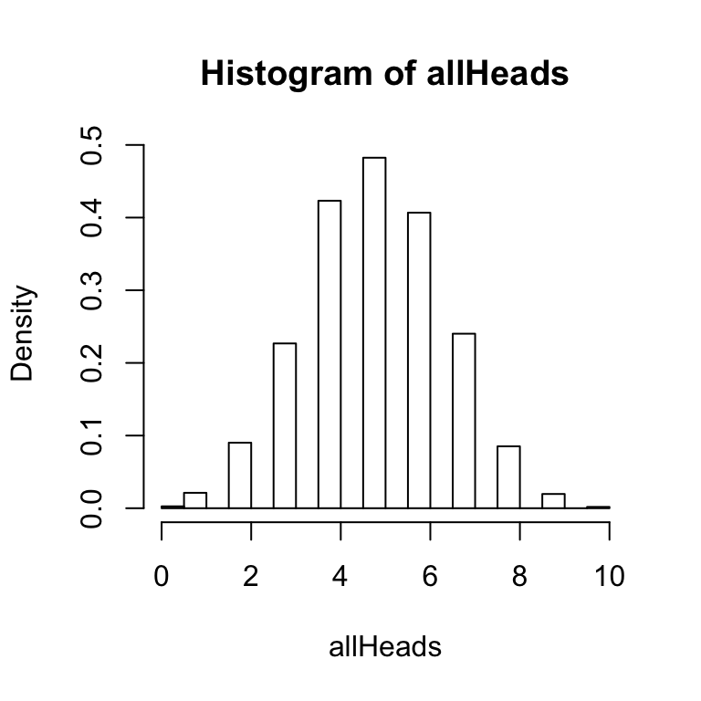

5.7 2 level designs and t-tests
There are multiple ways to estimate whether chance is responsible for a difference in an experiment. By far the most common approach is to use a t-test. The t-test is a statitiscal method for analyzing the data in two conditions to determine the likelihood that any observed difference could have been produced by chance. You can refer to the inferential statistics chapter, your old notes from statistics, discussions of t-tests in the lab manual, and google t-tests to learn more about how they work. For now, we will briefly describe the three different kinds of t-tests, and give an example of how they are used to analyze data, and how the results from a t-test are reported in journal article.
The three most common versions of the t-test are: one-sample t-test, independent samples t-test, and the paired samples t-test. The one sample t-test is used to test whether a sample mean could have come from a particular population. The independent samples t-test is used in between-subjects designs, to test whether the sample mean in one condition is different from the sample mean in another condition. The paired samples t-test is used in within-subjects designs, to test whether the sample mean in one condition is different from the sample mean in the other condition.
All t-tests give the same basic information, a t-value, and a p-value. Simply, the p-value gives the probability that the observed difference between means could have been produced by chance alone. If we dive into the details, we will see that the p-value estimate depends on several assumptions being met, and also has more nuanced meanings. But for now, it gives us what we want, an estimate of the likelihood that chance could have produced the difference we observed. When the p-value is very small (e.g., less than .05, or 5%), many researchers would conclude that a difference “statistically significant”, and probably not produced by chance.
5.7.1 An example
Figure 5.2: Sample test scores for both groups were randomly drawn from this distribution, with mean 75, and standard deviation 5.
Imagine a between-subjects experiment on 20 students (10 in each group), asking whether wearing a red shirt or a blue shirt changes test performance on a midterm. The IV is shirt color (red vs. blue), and the DV is test performance (percentage on the midterm). We have no good reason to think that shirt color will change test performance, so we expect that the red and blue shirt groups will have similar averages. We can simulate this experiment by randomly sampling scores for both groups from the same underlying distribution (see the figure).
Below are some imaginary results from the experiment.
| blue | red |
|---|---|
| 77 | 78 |
| 74 | 65 |
| 78 | 78 |
| 69 | 73 |
| 77 | 76 |
| 68 | 75 |
| 72 | 72 |
| 79 | 69 |
| 76 | 79 |
| 72 | 58 |
Looking at the individual scores is informative, but doesn’t immediately give us a sense of the difference between groups. So, we can compute the group means:
| condition | scores |
|---|---|
| Blue | 74.2 |
| Red | 72.3 |
The means are not exactly the same, so we might want to conclude that the studying manipulation influences test performance (after all, it probably does in the real world). However, the simulated data for both groups was actually sampled from the same distribution, with mean 75, and standard deviation 5. As a result, we know that the difference we observed between the sample means was due to random chance. We know this only because I simulated the data. If this was real data, then we wouldn’t know if the two sample means came from the the same distribution or different distributions.
Even though we know the difference in this example was caused by random sampling, we can still compute a t-test on the simulated data.The following t-test was conducted using R.
##
## Two Sample t-test
##
## data: blue and red
## t = 0.7817, df = 18, p-value = 0.4446
## alternative hypothesis: true difference in means is not equal to 0
## 95 percent confidence interval:
## -3.206484 7.006484
## sample estimates:
## mean of x mean of y
## 74.2 72.3If this was a real experiment that was published in a manuscript, then we would want to report the results by: 1) reporting the means in each condition, and 2) reporting the t-test, including the t-value, the degrees of freedom, and the associated p-value. The write-up might look something like this:
Mean test performance in the red shirt group (72.3) was not significantly different from mean test performance in the blue shirt group (74.2), t(18) = 0.782, p = 0.445.
5.7.2 Simulating the null
In the above example we found a small difference between the means of the red and blue shirt groups. We know this difference was produced by random sampling, and the t-test also returned a large p-value, indicating that chance could produce this small difference fairly often. This is all very sensible, as we don’t have a good reason to think that wearing different colored shirts should impact test performance.
However, as previously discussed, just the act of measuring test performance and splitting people into two groups can produce differences between the sample means. Importantly, even when there are no true differences, analyzing the data with a t-test will sometimes produce small p-values (e.g., < .05). For example, when there are no true differences, but there is variability in the measure, then approximately five percent of the time the t-test will return a p < .05. In other words, if we conducted the t-shirt experiment 100 times, we would expect that 5 of those experiments would produce a difference between the red and blue shirts, that a t-test would claim is unlikely to be produced by chance.
We can get a sense of this by repeating the above experiment 1000s of times. Each time we will take new random samples of test scores for the red and blue shirt groups, then we will compute the sample mean for each group, and then find the difference between the red and blue shirt groups. We can save the difference that we find for every replication, and then plot a histogram of the differences. This will show us the kind of differences that can be produced in this experiment by chance alone.

The first histogram shows the range of differences that can occur by chance alone. The distribution is centered on 0, because on average there should be no differences between these two sample means (after all they come from the same parent distribution). We also see the range extends to around -5% to +5%. This shows that some replications have the red shirt group have up to a 5% higher test score than the blue shirt group, or vice versa.

For each replication, the resulting t-value and p-value was recorded. The second histogram shows the distribution of t-values, and the third histogram shows the distribution of p-values.

The distribution of p-values is flat, meaning that any p-value between 0 and 100 should occur with the same frequency. This shows that, just by random sampling alone, we should expect to find significant differences (p<.05), about 5% of the time.
5.7.3 Simulating real differences
Imagine a between-subjects experiment on 20 students (10 in each group), asking whether studying or not changes test performance on a midterm. The IV is studying (studying vs. not studying), and the DV is test performance (percentage on the midterm). We assume that studying is important for passing a test, so the group who studies should have higher test scores than the group who doesn’t. We can simulate this experiment by randomly sampling scores for the study group from a distribution with a higher mean than the no study group.

For example, the histograms on the right show that the sample scores in the study group will come from a distribution with mean = 80, and standard deviation = 5; and the sample scores in the no study group will come from a distribution with mean = 65, and standard deviation 5. The simulated scores in the experiment are in the table below:
| study | no_study |
|---|---|
| 74 | 63 |
| 79 | 61 |
| 83 | 70 |
| 83 | 70 |
| 79 | 62 |
| 75 | 77 |
| 81 | 60 |
| 81 | 65 |
| 80 | 67 |
| 84 | 70 |
The group means are:
| condition | scores |
|---|---|
| no_study | 66.5 |
| study | 79.9 |
And, the t-test is:
##
## Two Sample t-test
##
## data: study and no_study
## t = 6.7623, df = 18, p-value = 2.458e-06
## alternative hypothesis: true difference in means is not equal to 0
## 95 percent confidence interval:
## 9.236851 17.563149
## sample estimates:
## mean of x mean of y
## 79.9 66.5The results of the t-test could be reported as follows:
Mean test performance in the study group group (79.9) was significantly higher than mean test performance in the no study group (66.5), t(18) = 6.762, p = 0.
Or, more simply: Students who studied (79.9) had higher averages than students who didn’t study (66.5), t(18) = 6.762, p = 0.